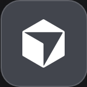

O MCP da BeeFood chegou
Conecte a sua IA preferida no BeeFood: ela lê os seus relatórios e edita o seu cardápio ali, na conversa.
- ✓ Vendas e relatórios
- ✓ Cardápio e preços
- ✓ Pedidos e cupons
- ✓ ChatGPT, Claude e mais

Conecte a sua IA preferida no BeeFood: ela lê os seus relatórios e edita o seu cardápio ali, na conversa.